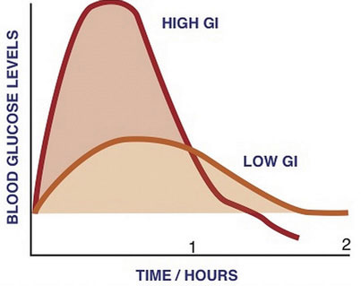

Sweetness is one of the five basic taste sensations of foods and beverages and is sensed by protein receptors in cells of the taste buds. Fast-releasing carbohydrates stimulate the sweetness taste sensation, which is the most sensitive of all taste sensations. Even extremely low concentrations of sugars in foods will stimulate the sweetness taste sensation. Sweetness varies between the different carbohydrate types—some are much sweeter than others. Fructose is the top naturally occurring sugar in sweetness value. See Table 4.1 "Sweetness Comparison of Carbohydrates" for sweetness comparisons among different naturally-occurring carbohydrates. Sweetness is a pleasurable sensation and some people enjoy the taste more than others. In a colloquial sense we identify such people as having a “sweet tooth.” This does not mean that the less-sweet whole grains containing more starches and fiber are less satisfying. Whole grains take longer to chew and get sweeter the more you chew them. Additionally, once in the stomach, whole-grain foods take longer to digest, and keep you full longer. Remember too that they contain fiber which makes elimination much smoother. Whole-grain foods satisfy the body the entire way through the digestive tract and provide the nutrients that also better satisfy the body’s functional needs.
Table 4.1 Sweetness Comparison of Carbohydrates
| Carbohydrate | Sweetness (percentage of sucrose) |
|---|---|
| Sucrose | 100 |
| Glucose | 74 |
| Galactose | 33 |
| Fructose | 173 |
| Maltose | 33 |
| Lactose | 16 |
| Starch | 0 |
| Fiber | 0 |
Source: Carter, J. Stein. “Carbohydrates.” © 1996 by J. Stein Carter. All rights reserved. http://www.biology.clc.uc.edu/courses/bio104/carbohydrates.htm.
The mechanical and chemical digestion of carbohydrates begins in the mouth. Chewing, also known as mastication, crumbles the carbohydrate foods into smaller and smaller pieces. The salivary glands in the oral cavity secrete saliva that coats the food particles. Saliva contains the enzyme, salivary amylaseEnzyme secreted by the salivary glands in the mouth that breaks down carbohydrates by breaking the glycosidic bonds between monomers.. This enzyme breaks the bonds between the monomeric sugar units of disaccharides, oligosaccharidesA carbohydrate that is a chain of a few (between three and ten) monosaccharides., and starches. The salivary amylase breaks down amylose and amylopectin into smaller chains of glucose, called dextrins and maltose. The increased concentration of maltose in the mouth that results from the mechanical and chemical breakdown of starches in whole grains is what enhances their sweetness. Only about five percent of starches are broken down in the mouth. (This is a good thing as more glucose in the mouth would lead to more tooth decay.) When carbohydrates reach the stomach no further chemical breakdown occurs because the amylase enzyme does not function in the acidic conditions of the stomach. But mechanical breakdown is ongoing—the strong peristaltic contractions of the stomach mix the carbohydrates into the more uniform mixture of chyme.
Salivary glands secrete salivary amylase, which begins the chemical breakdown of carbohydrates by breaking the bonds between monomeric sugar units.
The chyme is gradually expelled into the upper part of the small intestine. Upon entry of the chyme into the small intestine, the pancreas releases pancreatic juice through a duct. This pancreatic juice contains the enzyme, pancreatic amylaseEnzyme secreted by the pancreas that breaks down carbohydrates in the small intestine by breaking the glycosidic bonds between monomers., which starts again the breakdown of dextrins into shorter and shorter carbohydrate chains. Additionally, enzymes are secreted by the intestinal cells that line the villi. These enzymes, known collectively as disaccharides, are sucrase, maltase, and lactase. Sucrase breaks sucrose into glucose and fructose molecules. Maltase breaks the bond between the two glucose units of maltose, and lactase breaks the bond between galactose and glucose. Once carbohydrates are chemically broken down into single sugar units they are then transported into the inside of intestinal cells.
When people do not have enough of the enzyme lactase, lactose is not sufficiently broken down resulting in a condition called lactose intoleranceA condition in which there is incomplete digestion of lactose. It is caused by a deficiency in the enzyme, lactase. Symptoms include diarrhea, bloating, and abdominal cramps.. The undigested lactose moves to the large intestine where bacteria are able to digest it. The bacterial digestion of lactose produces gases leading to symptoms of diarrhea, bloating, and abdominal cramps. Lactose intolerance usually occurs in adults and is associated with race. The National Digestive Diseases Information Clearing House states that African Americans, Hispanic Americans, American Indians, and Asian Americans have much higher incidences of lactose intolerance while those of northern European descent have the least.National Digestive Diseases Information Clearing House. “Lactose Intolerance.” Last updated April 23, 2012. http://digestive.niddk.nih.gov/ddiseases/pubs/lactoseintolerance/. Most people with lactose intolerance can tolerate some amount of dairy products in their diet. The severity of the symptoms depends on how much lactose is consumed and the degree of lactase deficiency.
The cells in the small intestine have membranes that contain many transport proteins in order to get the monosaccharides and other nutrients into the blood where they can be distributed to the rest of the body. The first organ to receive glucose, fructose, and galactose is the liver. The liver takes them up and converts galactose to glucose, breaks fructose into even smaller carbon-containing units, and either stores glucose as glycogen or exports it back to the blood. How much glucose the liver exports to the blood is under hormonal control and you will soon discover that even the glucose itself regulates its concentrations in the blood.
Carbohydrate digestion begins in the mouth and is most extensive in the small intestine. The resultant monosaccharides are absorbed into the bloodstream and transported to the liver.
Glucose levels in the blood are tightly controlled, as having either too much or too little glucose in the blood can have health consequences. Glucose regulates its levels in the blood via a process called negative feedback. An everyday example of negative feedback is in your oven because it contains a thermostat. When you set the temperature to cook a delicious homemade noodle casserole at 375°F the thermostat senses the temperature and sends an electrical signal to turn the elements on and heat up the oven. When the temperature reaches 375°F the thermostat senses the temperature and sends a signal to turn the element off. Similarly, your body senses blood glucose levels and maintains the glucose “temperature” in the target range. The glucose thermostat is located within the cells of the pancreas. After eating a meal containing carbohydrates glucose levels rise in the blood.
Insulin-secreting cells in the pancreas sense the increase in blood glucose and release the hormonal message, insulin, into the blood. Insulin sends a signal to the body’s cells to remove glucose from the blood by transporting to the insides of cells and to use it to make energy or for building macromolecules. In the case of muscle tissue and the liver, insulin sends the biological message to store glucose away as glycogen. The presence of insulin in the blood signifies to the body that it has just been fed and to use the fuel. Insulin has an opposing hormone called glucagon. As the time after a meal increases, glucose levels decrease in the blood. Glucagon-secreting cells in the pancreas sense the drop in glucose and, in response, release glucagon into the blood. Glucagon communicates to the cells in the body to stop using all the glucose. More specifically, it signals the liver to break down glycogen and release the stored glucose into the blood, so that glucose levels stay within the target range and all cells get the needed fuel to function properly.
Almost all of the carbohydrates, except for dietary fiber and resistant starches, are efficiently digested and absorbed into the body. Some of the remaining indigestible carbohydrates are broken down by enzymes released by bacteria in the large intestine. The products of bacterial digestion of these slow-releasing carbohydrates are short-chain fatty acids and some gases. The short-chain fatty acids are either used by the bacteria to make energy and grow, are eliminated in the feces, or are absorbed into cells of the colon, with a small amount being transported to the liver. Colonic cells use the short-chain fatty acids to support some of their functions. The liver can also metabolize the short-chain fatty acids into cellular energy. The yield of energy from dietary fiber is about 2 kilocalories per gram for humans, but is highly dependent upon the fiber type, with soluble fibers and resistant starches yielding more energy than insoluble fibers. Since dietary fiber is digested much less in the gastrointestinal tract than other carbohydrate types (simple sugars, many starches) the rise in blood glucose after eating them is less, and slower. These physiological attributes of high-fiber foods (i.e. whole grains) are linked to a decrease in weight gain and reduced risk of chronic diseases, such as Type 2 diabetes and cardiovascular disease.
It’s Thanksgiving and you have just consumed turkey with mashed potatoes, stuffing smothered in gravy, green beans topped with crispy fried onions, a hot roll dripping with butter, and cranberry sauce. Less than an hour later you top it all off with a slice of pumpkin pie and then lie down on the couch to watch the football game. What happens in your body after digesting and absorbing the whopping amount of nutrients in this Thanksgiving feast? The “hormone of plenty,” insulin, answers the nutrient call. Insulin sends out the physiological message that glucose and everything else is in abundant supply in the blood, so cells absorb and then use or store it. The result of this hormone message is maximization of glycogen stores and all the excess glucose, protein, and lipids are stored as fat.
Figure 4.4
The glycemic index measures the effects of foods on blood-glucose levels.
A typical American Thanksgiving meal contains many foods that are dense in carbohydrates, with the majority of those being simple sugars and starches. These types of carbohydrate foods are rapidly digested and absorbed. Blood glucose levels rise quickly causing a spike in insulin levels. Contrastingly, foods containing high amounts of fiber are like time-release capsules of sugar. A measurement of the effects of a carbohydrate-containing food on blood-glucose levels is called the glycemic response (Figure 4.4).
The glycemic responses of various foods have been measured and then ranked in comparison to a reference food, usually a slice of white bread or just straight glucose, to create a numeric value called the glycemic index (GI)A measurement of the effects of carbohydrate-containing foods on blood-glucose levels.. Foods that have a low GI do not raise blood-glucose levels neither as much nor as fast as foods that have a higher GI. A diet of low-GI foods has been shown in epidemiological and clinical trial studies to increase weight loss and reduce the risk of obesity, Type 2 diabetes, and cardiovascular disease.Brand-Miller, J., PhD, et al. “Dietary Glycemic Index: Health Implications.” J Am Coll Nutr 28, no. 4, supplement (2009): 446S–49S. http://www.jacn.org/content/28/4_Supplement_1/446S.long.
Table 4.2 The Glycemic Index: Foods in Comparison to Glucose
| Foods | GI Value |
|---|---|
| Low GI Foods (< 55) | |
| Apple | 44 |
| Pear | 38 |
| Banana (under-ripe) | 51 |
| Grapefruit | 25 |
| Barley | 25 |
| Navy beans | 38 |
| Green peas | 48 |
| Oat bran (Quaker Oats) | 50 |
| Spaghetti (whole wheat) | 37 |
| Mashed sweet potatoes | 54 |
| Baked beans | 48 |
| Butter beans | 44 |
| Banana bread | 47 |
| Bread (sourdough) | 52 |
| Soy milk | 31 |
| Skim milk | 32 |
| Whole milk | 27 |
| Yogurt (sweetened) | 33 |
| Yogurt (plain, artificial sweetener) | 14 |
| Medium GI Foods (56–69) | |
| Apricots | 57 |
| Cantaloupe | 65 |
| Mashed potatoes | 70 |
| Whole-wheat pita bread | 57 |
| Whole-wheat bread | 69 |
| Couscous | 65 |
| Brown rice | 55 |
| Cheese pizza | 60 |
| Rye bread | 65 |
| Hamburger bun | 61 |
| Black bean soup | 64 |
| Macaroni and cheese | 64 |
| Coca-Cola | 63 |
| High GI Foods (70 and higher) | |
| Dates | 103 |
| Banana (over-ripe) | 82 |
| Parsnips | 97 |
| Corn chips | 72 |
| Pretzels | 83 |
| White bread | 70 |
| White rice | 72 |
| Spaghetti (durum flour) | 78 |
| White rice (instant) | 87 |
| French baguette | 95 |
| Bagel | 72 |
| Bread stuffing | 74 |
| Cheerios | 74 |
| Cream of wheat | 71 |
| Raisin Bran | 73 |
| Fruit roll-up | 99 |
| Gatorade | 78 |
Source: University of Sydney. Glycemic Index Database. © 2011 The University of Sydney, all rights reserved. http://www.glycemicindex.com/.
The carbohydrate type within a food affects the GI, but so does its fat and fiber content (which reduce the GI). Increased fat and fiber in foods increases the time required for digestion and delays the rate of gastric emptying into the small intestine. Processing and cooking additionally affect a food’s GI by increasing their digestibility. Advancements in the technologies of food processing and the high consumer demand for convenient, precooked foods in the United States have created foods that are digested and absorbed more rapidly, independent of the fiber content. Modern breakfast cereals, breads, pastas, and many prepared foods have a high GI. In contrast, most raw foods have a lower GI. (However, the more ripened a fruit or vegetable is, the higher its GI.) Table 4.2 "The Glycemic Index: Foods in Comparison to Glucose" provides the GI for various foods. The GI can be used as a guide for choosing healthier carbohydrate choices but has some limitations. One is that the GI does not take into account the amount of carbohydrates in a portion of food, only the type of carbohydrate. Another is that combining low- and high-GI foods changes the GI for the meal. Also, some nutrient-dense foods have higher GIs than less nutritious food. (For instance, oatmeal has a higher GI than chocolate because the fat content of chocolate is higher.) Lastly, meats and fats do not have a GI since they do not contain carbohydrates.
To balance the high-GI foods on the Thanksgiving table with low-GI foods, follow some of these suggestions: